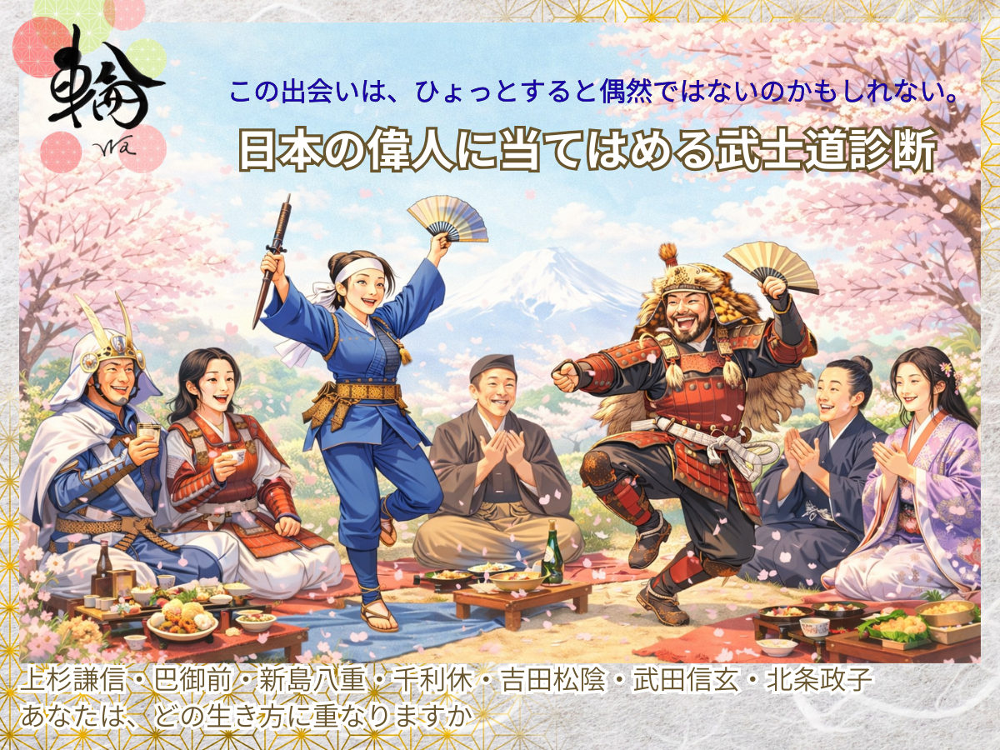

Waごころ寺子屋 診断アプリ
上杉謙信・巴御前・新島八重・千利休・吉田松陰・武田信玄・北条政子
直感でお選びください
答えではなく、これまでの在り方があらわれます
診断結果
日々の在り方を、少しずつ整えてみてください。
和の文化は、ひとつではなく「輪」としてつながっています
Waごころ寺子屋では、その入口として、さまざまな文化をご紹介しています
このような小さな体験からでも、何か感じていただけましたら幸いです
Waごころ寺子屋では、このような試み（『生き方』は、どの偉人に重なるか診断）も含め、和の文化を今の時代に合わせてお伝えしております
もし何か感じるものがありましたら、どうぞ、そっとのぞいてみてください
Waごころ寺子屋 管理人
日本舞踊家 花伎稀世花